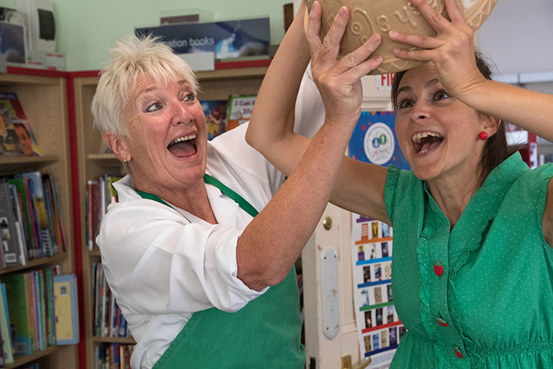

	<div id="oneCol" class="row">
		<div class="large-12 columns">
			<div class="medium-10 medium-offset-1 end columns">
				<h3>Human Story Theatre</h3>
				<p>Human Story Theatre - new writing, real issues that focus on plays with health and social care issues at heart. The Theatre work with local communities and groups relevant to the issue being explored in the play.</p>
			</div>
			<div class="center">
				<a href="./human-story-1.html" title="View next Human Story Theatre photograph"></a><br />
				Connie's Colander explored the evolving mother and daughter relationship as Alzheimers gradually impacted the mother's health. The play was performed nationally in libraries and community spaces.<br>
				<span class="links"><a href="./human-story-1.html">next</a></span>
	 		 </div>
		</div>
	</div>


